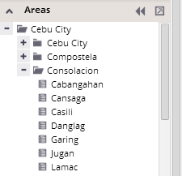
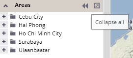

This section provides an interactive hierarchical tree of analytical units. It lets you view the units' hierarchy or select units of interest.

Each unit can be expanded or collapsed by clicking on the / button in front of a unit name.
All units on a distinct hierarchical level can be expanded (or collapsed) using the level switcher in the data exploration settings panel.
You can easily get to the highest hierarchical level of the units' tree by clicking the "Collapse all" button located in the header of the Areas panel: .
After performing this action, all lower levels of units will be collapsed:
